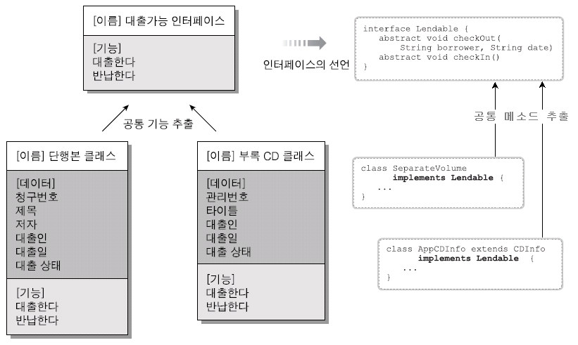

인터페이스 (Interface)
객체지향 언어를 접하면서 '인터페이스'는 상당히 중요한 쉽지 않는 개념입니다.
여기서 '쉽지 않다'라는 의미는 인터페이스 문법을 습득하는 것에 어려움이 있다는 것이 아니고,
인터페이스를 개발 중인 프로그래밍에 어떻게 접목시켜야 할지 고민이 많이 된다는 것입니다. 문법은 쉽습니다.
사실 오늘 수업을 통해 인터페이스를 완전히 이해하고, 실제 프로젝트에 적용한다는 것은 어렵습니다.
이번 강의를 통해서 인터페이스의 문법을 이해하고, 추후 살펴볼 디자인 패턴 강의 때 다시 한번 인터페이스를 공부한다면
이해에 도움이 될 것입니다. 시간이 지나면서 인터페이스를 내 소스에 녹여낼 수 있을 것입니다.
그리고, 실무에서 규모가 어느 정도 큰 프로젝트를 하게 된다면,
인터페이스의 필요성에 대해서 완전히 이해를 하게 될 것입니다.
(수업 중에 하게 되는 짧은 예제에서는 인터페이스의 필요성을 거의 느끼지 못할 수도 있을 것입니다)
인터페이스란?
① 작업명세서(작업지시서) - "앞으로 이렇게 만들어요"라고 표현해 놓은 것
- 실제 구현된 것이 전혀 없는 기본 설계도.(알맹이 없는 껍데기)
- 일종의 추상클래스. 추상클래스(미완성 설계도)보다 추상화 정도가 높다.
- 인스턴스를 생성할 수 없고, 클래스 작성에 도움을 줄 목적으로 사용된다
- 미리 정해진 규칙에 맞게 구현하도록 표준을 제시하는 데 사용된다
- 추상메서드와 상수만을 멤버로 가질 수 있다.
② 다형성을 가능하게 한다(하나의 객체를 다양하게 많은 type으로 만들 수 있다).
Class S{
...
public void method(){…}
}
Class C extends S {
...
public void method(){…}
}
C c = new C();
S c = new C();
S s = new S();
s.method(); c.method();
③ 객체를 부속품화 -다양한 객체를 제품의 부속품처럼 개발자 마음대로 변경 할 수 있다.
④ 사용법은 어렵지 않지만, 실제 개발에 적용시키기는 쉽지 않다.
⑤ 인터페이스를 공부하는데 가장 좋은 방법은 패턴이나 프레임워크(ex. spring)를 통해 습득하는 것
인터페이스의 문법
⑴ 'class'대신 'interface' 예약어를 사용한다는 점에서 클래스와 유사하다.
⑵ 실제 구현된 기능은 없어요 - 추상메소드와 상수만이 존재 합니다.
public interface 인터페이스이름 {
public static final 타입 상수이름 = 값;
public abstract 메서드 이름(매개변수 목록); //구현된 메소드는 갖을 수 없다
}
☞모든 멤버변수는 public static final이어야하며 이를 생략할 수 있다.'
모든 메서드는 public abstract 이어야 하며, 이를 생략할 수 있다.
⑵ private는 불가 - 상수나 메소드를 만들 때 private 접근 제한자는 불가
⑶ 추상화 - 메소드는 무조건 추상 메소드만 존재 합니다. (예외는 있으나 잠깐 생각하지 말자.
default 메소드 자바1.8부터 지원. Static 메소드는 가능)
⑷ 객체변수타입 - 인터페이스는 객체를 생성할 수 없다. 다만, 객체 타입(변수 타입)으로만 사용 됩니다.
(예외, 익명 구현 객체만이 가능은 하다. 안드로이드에서 주로)
⑸ 구현은 Implement 되는 클래스에서 합니다.
public interface InterfaceEx1 {
public /*static final*/ int CONSTANT_NUM = 100;
public void calculate();
}
public interface InterfaceEx2 {
public static final String CONSTANT_STRING = "Hello World";
public String getStr();
}
public class InterfaceClass implements InterfaceEx1, InterfaceEx2{
@Override
public String getStr() {
System.out.println("실제 구현은 implements한 클래스에서 해요");
return null;
}
@Override
public void calculate() {
System.out.println("실제 구현은 implements한 클래스에서 해요");
}
}
public class TestMain {
public static void main(String[] args) {
InterfaceClass ifc = new InterfaceClass();
ifc.getStr();
ifc.calculate();
InterfaceEx1 if1 = new InterfaceClass();
InterfaceEx2 if2 = new InterfaceClass();
// 인터페이스는 객체를 생성하지는 못하지만 변수객체태압으로는 가능하다.
// 그래서 접근을 제한하는 요도로 이렇게 사용하기도 한다
if1.calculate();
if2.getStr();
System.out.println("상수 InterfaceEx1.CONSTANT_NUM : "+InterfaceEx1.CONSTANT_NUM);
System.out.println("상수 InterfaceClass.CONSTANT_NUM : "+InterfaceClass.CONSTANT_NUM);
System.out.println("상수 InterfaceEx2.CONSTANT_STRING : "+InterfaceEx2.CONSTANT_STRING);
System.out.println("상수 InterfaceClass.CONSTANT_STRING : "+InterfaceClass.CONSTANT_STRING);
}
}
스마트폰 제작을 통한 Interface의 이해
요즘 스마트폰에는 아주 많은 기능이 있습니다. 제조사에서 출시할 때 기본적으로 설치되어 있는 어플 외에도
구글 스토어를 통해서 다양한 어플을 설치할 수 있습니다.
시나리오 : A전자에서 만든 다양한 스마트폰 모델은 아래와 같습니다.
a제품 : DMB송수신불가, 3G, TV리모콘 미탑재,
b제품 : DMB송수신가능, LTE, TV리모콘 탑재,
c제품 : DMB송수신가능, LTE, TV리모콘 미탑재,
public interface IAcor {
public void dmbReceive();
public void lte();
public void tvremoteControl();
}
public class AModel implements IAcor {
private String model = "A 모델";
@Override
public void dmbReceive() {System.out.println(model +"은 DMB 송신 가능한 모델");}
@Override
public void lte() {System.out.println(model +"은 3G 모델");}
@Override
public void tvremoteControl() {System.out.println(model +"은 TV리모콘 미탑재 모델");}
}
public class BModel implements IAcor {
private String model = "B 모델";
@Override
public void dmbReceive() {System.out.println(model +"은 DMB 송신 가능한 모델");}
@Override
public void lte() {System.out.println(model +"은 LTE 모델");}
@Override
public void tvremoteControl() {System.out.println(model +"은 TV리모콘 탑재 모델");}
}
public class CModel implements IAcor {
private String model = "C 모델";
@Override
public void dmbReceive() {System.out.println(model +"은 DMB 송신 가능한 모델");}
@Override
public void lte() {System.out.println(model +"은 LTE 모델");}
@Override
public void tvremoteControl() {System.out.println(model +"은 TV리모콘 미탑재 모델");}
}
public class TestMain {
public static void main(String[] args) {
/*AModel a = new AModel();
BModel b = new BModel();
CModel c = new CModel();*/
IAcor a = new AModel();
IAcor b = new BModel();
IAcor c = new CModel();
a.dmbReceive (); a.lte(); a.tvremoteControl();
b.dmbReceive (); b.lte(); b.tvremoteControl();
c.dmbReceive (); c.lte(); c.tvremoteControl();
IAcor[] phones = {a, b, c};
for(IAcor p : phones) {
p.dmbReceive();
p.lte();
p.tvremoteControl();
System.out.println("~~~~~~~~~~~~~~~~");
}
}
}
다형성이란?
“여러 가지 형태를 가질 수 있는 능력”
말 그대로 객체가 다양하게 변할 수 있다고 생각하면 됩니다
“one interface, multiple implementation”
※ 하나의 인터페이스를 사용하여 다양한 구현 방법을 제공
※ 하나의 클래스나 함수가 다양하게 동작하는 것.
<예1>
오버로딩(overloading) : 같은 클래스 내에서만 오버로딩이라 할 수 있다.
메소드 overriding(다중정의) : 같은 이름을 가진 메소드를 다른 클래스에서 재정의 하는 법
☞일반함수(메소드) 오버로딩
class Print{
public void print(int i){
System.out.println("정수값 print : "+i);
}
public void print(String str){
System.out.println("문자열 print : "+str);
}
public void print(boolean bool){
System.out.println("boolean값 print : "+bool);
}
public void print(char c){
System.out.println("문자 print : "+c);
}
}
☞생성자함수 오버로딩과 일반 메소드 오버로딩
public class OverloadingTest {
private int i1;
private int i2;
public OverloadingTest() {
System.out.println("인자 없는 생성자함수");
}
public OverloadingTest(int i) {
System.out.println("인자를 "+i+"로 받은 생성자함수");
i1 = i2= i;
}
public OverloadingTest(String str) {
System.out.println("인자를 "+str+"로 받은 생성자함수");
i1 = i2 = Integer.parseInt(str);
}
public OverloadingTest(int i1, int i2) {
System.out.println("인자를 "+i1+"과 "+i2+"로 받은 생성자함수");
this.i1 = i1;
this.i2 = i2;
}
public void calculate() {
System.out.println(i1+"+"+i2+"="+(i1+i2));
}
public void calculate(char c) {
System.out.print(""+i1+c+i2+" = ");
switch (c) {
case '+': System.out.println(i1+i2);break;
case '-': System.out.println(i1-i2);break;
case '*': System.out.println(i1*i2);break;
case '/': System.out.println((double)i1/i2);break;
default:
System.out.println("유효하지 않는 연산자입니다");
}
}
}
public class TestMain {
public static void main(String[] args) {
OverloadingTest t1 = new OverloadingTest();
OverloadingTest t2 = new OverloadingTest(5);
OverloadingTest t3 = new OverloadingTest("3");
OverloadingTest t4 = new OverloadingTest(5,3);
t1.calculate();
t2.calculate('-');
t3.calculate('@');
}
}
하나의 참조변수로 여러 타입의 객체를 참조할 수 있는 것.
즉, 부모클래스 타입의 참조변수로 자식클래스 타입의 객체를 다룰 수 있는 것
Class TV {
......
}
Class UltraHDTV extends TV {
......
}
UltraHDTV tv1 = new UltraHDTV();
TV tv1 = new UltraHDTV();
오버라이딩(메소드 재정의) ch10_abstract의 com.tj.ex02참조
circle.draw()
rectangle.draw()
triangle.draw()
※ 오버라이딩의 조건 :
① 선언부가 같아야 한다(이름, 매개변수, 리턴타입)
② 접근제어자를 좁은 범위로 변경할 수 없다.
조상클래스 메서드가 protected라면 범위가 같거나 넓은 protected나 public으로만
※ 오버로딩 vs. 오버라이딩
오버로딩(overloading) : 컴파일러 입장에서는 기존에 없는 새로운 메서드를 정의하는 것(new)
메소드 다중정의 (같은 class에서 동일한 메소드가 매개변수를 달리 여러 개 존재
오버라이딩(overriding): 상속받은 메서드의 내용을 변경하는 것(change, modify)
메소드 재정의 : 부모클래스와 자식클래스에 동일한 method 존재(틀만 가져와 재정의)
인터페이스에서의 다형성 예제
말 그대로 객체가 다양하게 변할 수 있다고 생각하면 됩니다.
영화를 생각해 봅시다.
배우는 어떤 영화에서는
경찰관도 되었다가 소방관도 되었다가 요리사도 됩니다.
경찰관이 되서 범인도 잡고 잃어버린 물건도 찾습니다.
소방관이 되어서 불도 끄고 사람도 구합니다.
요리사가 되어서 피자도 만들고 스파게티도 만듭니다.
| 배우 | 경찰관 | 소방관 | 요리사 |
| 범인찾기 | 불끄기 | 피자 요리 | |
| 물건찾기 | 사람구하기 | 스파게티 요리 |
이러한 상황을 interface 를 통해 살펴보도록 하겠습니다
public interface PoliceMan {
public void canCatchCriminal();
public void canSearch();
}
public interface FireFighter {
public void outFire();
public void saveMan();
}
public interface Chef {
public void makePizza();
public void makeSpaghetti();
}
public class Actor implements PoliceMan, FireFighter, Chef{
private String name;
public Actor(String name) {this.name = name;}
@Override
public void makePizza() {System.out.println("피자를 만들 수 있습니다.");}
@Override
public void makeSpaghetti() {System.out.println("스파게티를 만들 수 있습니다.");}
@Override
public void outFire() {System.out.println("불을 끌 수 있습니다.");}
@Override
public void saveMan() {System.out.println("사람을 구할 수 있습니다.");}
@Override
public void canCatchCriminal() {System.out.println("범인을 잡을 수 있습니다.");}
@Override
public void canSearch() {System.out.println("물건을 찾을 수 있습니다.");}
}
public class AcotorMain {
public static void main(String[] args) {
Actor park = new Actor("박보검");
park.canCatchCriminal(); park.canSearch();
park.outFire(); park.saveMan();
park.makePizza(); park.makeSpaghetti();
PoliceMan parkPol = new Actor("박보검");
parkPol.canCatchCriminal();
parkPol.canSearch();
FireFighter parkFire = new Actor("박보검");
parkFire.outFire();
parkFire.saveMan();
Chef parkChef = new Actor("박보검");
parkChef.makePizza();
parkChef.makeSpaghetti();
}
}
종합 예제 : Total Example 02
자동차 옵션에 따라 변경되는 세금 계산 프로그래밍 구현
※시나리오 부석 후 상속을 통해 자동차 객체를 만들어본다.
자동차의 경우 동일한 자동차 모델에서 옵션사항에 따라 세금차이가 있습니다.
그 중 배기량이 높은 자동차의 경우 세금이 높습니다.
Car : color, tire, displacement, handle, getSpec()
LowGradeCar : tax, color(블루), tire(일반타이어), displacement(2000), handle(파워핸들), getSpec()
HighGradeCar : tax, color(레드), tire(광폭타이어), displacement(2200), handle(파워핸들), getSpec()
☞ getSpec()을 통해서 자동차의 옵션을 보고, 세금을 파악합니다
public abstract class Car {
private String color;
private String tire;
private int displacement;
private String handle;
public Car(String color, String tire, int displacement, String handle) {
this.color = color;
this.tire = tire;
this.displacement = displacement;
this.handle = handle;
}
public abstract void getSpec();
setter & getter
}
public class LowGradeCar extends Car {
private int tax = 50000;
public LowGradeCar(String color, String tire, int displacement, String handle) {
super(color, tire, displacement, handle);
}
@Override
public void getSpec() {
System.out.println("*******************");
System.out.println("색 상 : "+getColor());
System.out.println("타이어 : "+getTire());
System.out.println("배기량 : "+getDisplacement());
System.out.println("핸 들 : "+getHandle());
if(getDisplacement()>1600) tax += 15000;
System.out.println("세 금 : " +tax);
System.out.println("*******************");
}
}
public class HighGradeCar extends Car {
private int tax = 100000;
public HighGradeCar(String color, String tire, int displacement, String handle) {
super(color, tire, displacement, handle);
}
@Override
public void getSpec() {
System.out.println("*******************");
System.out.println("색 상 : "+getColor());
System.out.println("타이어 : "+getTire());
System.out.println("배기량 : "+getDisplacement());
System.out.println("핸 들 : "+getHandle());
if(getDisplacement()>2500) tax += 30000;
System.out.println("세 금 : " +tax);
System.out.println("*******************");
}
}
public class CarSpecs {
public static final String COLOR_RED="레드";
public static final String COLOR_BLUE = "블루";
public static final String COLOR_GRAY= "회색";
public static final String TIRE_NORMAL = "일반타이어";
public static final String TIRE_WIDE = "일반타이어";
public static final int DISPLACEMENT_2000 = 2000;
public static final int DISPLACEMENT_2200 = 2200;
public static final String HANDLE_POWER = "파워핸들";
}
public class MainTest {
public static void main(String[] args) {
Car lCar = new LowGradeCar(CarSpecs.COLOR_BLUE, CarSpecs.TIRE_NORMAL, CarSpecs.DISPLACEMENT_2000, CarSpecs.HANDLE_POWER);
Car hCar = new HighGradeCar(CarSpecs.COLOR_RED, CarSpecs.TIRE_WIDE, CarSpecs.DISPLACEMENT_2200, CarSpecs.HANDLE_POWER);
lCar.getSpec();
hCar.getSpec();
}
}
인터페이스와 다중상속
Java는 다중상속이 불가 합니다.
예전의 C++에서는 다중상속이 가능하였으나,
java에서는 다중상속이 불가능 합니다. 이유는 C++에서 다중상속을 가능하게 하여 좋은 점도 있었으나,
다중상속으로 인한 문제점도 많아서 C++에서 발전된 java 에서는 다중상속을 막았습니다.
하지만 java에서도 interface를 통해서는 다중구현이 가능하여, 여러 가지 타입으로 객체를 선언할 수 있습니다.
정확하게 말하면 java는 다중상속이 아닌 ‘다형성(type이 다양하게 존재할 수 있다)’이 존재한다고 이해하셔야 합니다.
인터페이스를 구현하는 것은 클래스를 상속받는 것과 비슷합니다
다만, ‘extends’ 대신 ‘implements’를 사용합니다
⑴ 단일상속(O)
public class ChildClass extends ParentClass1 {
}
⑵ 다중상속(X)
public class ChildClass extends ParentClass1, ParentClass2, ParentClass3 {
}
⑶ 다중구현(O)
public class ChildClass implements IFunction1, IFunction2, IFunction3 {
}
⑷ 인터페이스의 다중상속(O)
| 단 일 | 다 중 | |
| class ◀- class | 단일 상속 | 다중 상속 X |
| interface <- class | 단일 구현 | 다중 구현 |
| interface ◀- interface | 단일 상속 | 다중 상속(○) |
| interface <- class -▶ class | class className extends C implements I, I2, I3 { } | |
public interface I1 {
public int i1 = 1;
public void m1();
}
public interface I2 {
public static final int i2 = 2;
public void m2();
}
public interface I3 extends I1, I2 {
public int i3 = 3;
public void m3();
}
public class TestClass implements I3 {
@Override
public void m1() {System.out.println("상수i1:"+i1);}
@Override
public void m2() {System.out.println("상수i2:"+i2);}
@Override
public void m3() {System.out.println("상수i3:"+i3);}
}
public interface I11 {
public int i11 = 11;
public void m11();
}
public class TestChildClass extends TestClass implements I11 {
@Override
public void m11() {System.out.println("상수i11:"+i11);}
}
public class TestMain {
public static void main(String[] args) {
TestChildClass test = new TestChildClass();
//test.i3 = 7; 인터페이스안의 멤버변수는 static final 변수(상수)이므로 값 변경 불가
test.m1();
test.m2();
test.m3();
test.m11();
}
}
인터페이스를 통한 예제만들기
<예제1> 로봇 장난감 만들기 프로그래밍
마트에 장난감 코너에 가보면 로봇 장난감이 많습니다.
장난감에는 해당 장난감을 가지고 놀 수 있는 어린아이의 연령대가 표시되어 있습니다.
예를 들어 미사일이 나가는 로봇은 위험성이 존재하여 4세 이상의 어린이만 구매 가능하고,
곰돌이 로봇의 경우에는 귀엽고, 위험성이 없어 0세 이상의 모든 어린아이들이 가지고 놀 수 있습니다.
이러한 상황을 java 프로그램으로 구현해 보도록 하겠습니다.
| 미사일 발사 | 불빛 발사 | 팔다리 움직임 | |
| 곰돌이 | X | X | O |
| 마징가 | O | X | O |
| 비행기 | O | O | X |
public interface IToy { }
public interface IMoveArmLeg extends IToy {
void canMoveArmLeg();
}
public interface ILight extends IToy {
void canLight();
}
public interface IMissile extends IToy {
void canMisile();
}
public class PoohToy implements IMoveArmLeg {
public PoohToy() {
System.out.println("곰돌이입니다");
canMoveArmLeg();
System.out.println("============================");
}
@Override
public void canMoveArmLeg() {System.out.println("팔다리를 움직일 수 있습니다");}
}
public class MazingerToy implements IMissile, IMoveArmLeg{
public MazingerToy() {
System.out.println("마징가입니다");
canMisile();
canMoveArmLeg();
System.out.println("==================");
}
@Override
public void canMoveArmLeg() {System.out.println("팔다리를 움직일 수 있습니다");}
@Override
public void canMisile() {System.out.println("미사일을 발사할 수 있습니다");}
}
public class AirPlaneToy implements IMissile, ILight{
public AirPlaneToy() {
System.out.println("비행기입니다");
canLight();
canMisile();
System.out.println("==================");
}
@Override
public void canLight() {System.out.println("불빛발사 가능합니다");}
@Override
public void canMisile() {System.out.println("미사일을 발사할 수 있습니다");}
}
public class TestMain {
public static void main(String[] args) {
/*PoohToy pooh = new PoohToy();
MazingerToy mazinger = new MazingerToy();
AirPlaneToy airPlanToy = new AirPlaneToy();*/
IToy pooh = new PoohToy();
IToy mazinger = new MazingerToy();
IToy airPlanToy = new AirPlaneToy();
IToy[] toys = {pooh, mazinger, airPlanToy};
for(IToy t : toys)
System.out.println(t.getClass().getName());
}
}
<예제2>
볼륨을 올리거나 내리는 인터페이스를 만들어 그 인터페이스를 활용한 클래스(Radio, TV, Speaker)를 만들어봅시다.
public interface Volume {
public void volumeUp();
public void volumeUp(int level);
public void volumeDown();
public void volumeDown(int level);
}
public class Speaker implements Volume {
private int volumeLevel;
public Speaker() {volumeLevel=0;}
public Speaker(int volumeLevel) {
this.volumeLevel = volumeLevel;
}
@Override
public void volumeUp() {
volumeLevel++;
System.out.println("스피커 볼륨을 1만큼 올려서 "+volumeLevel);
}
@Override
public void volumeUp(int level) {
volumeLevel += level;
System.out.println("스피커 볼륨을 "+level+"만큼 올려서 "+volumeLevel);
}
@Override
public void volumeDown() {
volumeLevel--;
System.out.println("스피커 볼륨을 1만큼 내려서 "+volumeLevel);
}
@Override
public void volumeDown(int level) {
volumeLevel -= level;
System.out.println("스피커 볼륨을 "+level+"만큼 내려서 "+volumeLevel);
}
}
public class Radio implements Volume {
private int volumeLevel;
public Radio() {volumeLevel=0;}
public Radio(int volumeLevel) {
this.volumeLevel = volumeLevel;
}
public void volumeUp() {
volumeLevel++;
if(volumeLevel>20) {
volumeLevel=20;
System.out.println("라디오 최대 볼륨은 현재 볼륨 "+volumeLevel);
}else {
System.out.println("라디오 볼륨을 1만큼 올려서 "+volumeLevel);
}
}
@Override
public void volumeUp(int level) {
volumeLevel += level;
if(volumeLevel>20) {
volumeLevel=20;
System.out.println("라디오 최대 볼륨은 현재 볼륨 "+volumeLevel);
}else {
System.out.println("라디오 볼륨을 1만큼 올려서 "+volumeLevel);
}
}
@Override
public void volumeDown() {
volumeLevel--;
if(volumeLevel<3) {
volumeLevel = 3;
System.out.println("라디오 최저 볼륨은 현재 볼륨 "+volumeLevel);
}else {
System.out.println("라디오 볼륨을 1만큼 내려서 "+volumeLevel);
}
}
@Override
public void volumeDown(int level) {
volumeLevel -= level;
if(volumeLevel<3) {
volumeLevel = 3;
System.out.println("라디오 최저 볼륨은 현재 볼륨 "+volumeLevel);
}else {
System.out.println("라디오 볼륨을 1만큼 내려서 "+volumeLevel);
}
}
}
public class TV implements Volume {
private int volumeLevel;
public TV() {volumeLevel=0;}
public TV(int volumeLevel) {this.volumeLevel=volumeLevel;}
@Override
public void volumeUp() {
volumeLevel++;
if(volumeLevel>50) {
volumeLevel=50;
System.out.println("TV 최대 볼륨은 현재 볼륨 "+volumeLevel);
}else {
System.out.println("TV 볼륨을 1만큼 올려서 "+volumeLevel);
}
}
@Override
public void volumeUp(int level) {
volumeLevel += level;
if(volumeLevel>50) {
volumeLevel=50;
System.out.println("TV 최대 볼륨은 현재 볼륨 "+volumeLevel);
}else {
System.out.println("TV 볼륨을 1만큼 올려서 "+volumeLevel);
}
}
@Override
public void volumeDown() {
volumeLevel--;
if(volumeLevel<0) {
volumeLevel = 0;
System.out.println("TV 최저 볼륨은 현재 볼륨 "+volumeLevel);
}else {
System.out.println("TV 볼륨을 1만큼 내려서 "+volumeLevel);
}
}
@Override
public void volumeDown(int level) {
volumeLevel -= level;
if(volumeLevel<0) {
volumeLevel = 0;
System.out.println("TV 최저 볼륨은 현재 볼륨 "+volumeLevel);
}else {
System.out.println("TV 볼륨을 1만큼 내려서 "+volumeLevel);
}
}
}
public class VolTestMain {
public static void main(String[] args) {
Speaker speaker = new Speaker();
Radio radio = new Radio(3);
TV tv = new TV();
Volume vol[] = new Volume[3];
vol[0] = speaker;
vol[1] = radio;
vol[2] = tv;
speaker.volumeUp(10);
radio.volumeUp(10);
tv.volumeUp(10);
System.out.println("이제부터는 인터페이스를 이용한 호출입니다");
for(int i=0 ; i<vol.length ; i++)
vol[i].volumeUp(10);
for(Volume v:vol)
v.volumeUp();
}
}
대출관련 인터페이스와 단행본 클래스

public interface ILendable {
byte STATE_BORROWED = 1; // 대출중
byte STATE_NORMAL = 0; // 대출되지 않은 상태
void checkOut(String borrower, String checkOutDate); // 대출
void checkIn(); // 반납
void printState();//대출상태 출력
}
public class Book implements ILendable {
private String requestNo; // 청구번호
private String bookTitle; // 책제목
private String writer;
private String borrower;
private String checkOutDate;
private byte state;
public Book(String requestNo, String bookTitle, String writer) {
this.requestNo = requestNo;
this.bookTitle = bookTitle;
this.writer = writer;
state = STATE_NORMAL;
}
@Override
public void checkOut(String borrower, String checkOutDate) {
if(state!=STATE_NORMAL) {
System.out.println("대출불가");
return;
}
this.borrower = borrower;
this.checkOutDate = checkOutDate;
state = STATE_BORROWED;
System.out.println("\""+bookTitle+"\"이(가) 대출되었습니다.");
System.out.println("[대출인] "+borrower);
System.out.println("[대출일] "+checkOutDate);
}
@Override
public void checkIn() {
borrower = null;
checkOutDate = null;
state = STATE_NORMAL;
System.out.println("\""+bookTitle+"\"이(가) 반납되었습니다.");
}
public void printState() {
if(state==STATE_BORROWED) {
System.out.println("\""+bookTitle+"\"은(는) 대출 중입니다");
}else if(state==STATE_NORMAL) {
System.out.println("\""+bookTitle+"\"은(는) 대출 가능합니다");
}else {
System.out.println("\""+bookTitle+"\"은(는) 유령상태입니다");
}
}
}
public class BookMain {
public static void main(String[] args) {
Book obj = new Book("409101a","이것이 자바다", "신용권");
obj.printState();
obj.checkOut("홍길동", "20171010"); // 홍길동이 대출함
obj.printState();
obj.checkIn();
obj.printState(); // 반납함
}
}
※ 인터페이스의 장점
⑴ 개발시간을 단축시킬 수 있다.
일단 인터페이스가 작성되면, 이를 사용해서 프로그램을 작성하는 것이 가능하다.
메서드를 호출하는 쪽에서는 메서드의 내용에 관계없이 선언부만 알면 되기 때문이다.
그리고 동시에 다른 한 쪽에서는 인터페이스를 구현하는 클래스를 작성하도록 하여,
인터페이스를 구현하는 클래스가 작성될 때까지 기다리지 않고도 양쪽에서 동시에 개발을 진행할 수 있다.
⑵ 표준화가 가능하다
프로젝트에 사용되는 기본 틀을 인터페이스로 작성한 다음,
개발자들에게 인터페이스를 구현하여 프로그램을 작성하도록 함으로써
보다 일관되고 정형화된 프로그램의 개발이 가능하다
⑶ 서로 관계없는 클래스들에게 관계를 맺어 줄 수 있다.
서로 상속관계에 있지도 않고, 같은 조상클래스를 가지고 있지 않은
서로 아무런 관계도 없는 클래스들에게 하나의 인터페이스를 공통적으로
구현하도록 함으로써 관계를 맺어 줄 수 있다
⑷ 독립적인 프로그래밍이 가능하다
인터페이스를 이용하면 클래스의 선언과 구현을 분리시킬 수 있기 때문에
실제구현에 독립적인 프로그램을 작성하는 것이 가능하다. 클래스와 클래스간의 직접적인 관계를
인터페이스를 이용해서 간접적인 관계로 변경하면, 한 클래스의 변경이 관련된 다른 클래스에
영향을 미치지 않는 독립적인 프로그래밍이 가능하다.
public interface I {
public void method();
}
public class A implements I {
@Override
public void method() { System.out.println("A method()"); }
}
public class B implements I {
@Override
public void method() { System.out.println("B method()"); }
}
public class User {
public void aorbUse(I i) {
i.method();
}
}
public class TestMain {
public static void main(String[] args) {
User user = new User();
A a = new A();
B b = new B();
user.aorbUse(a);
user.aorbUse(b);
//user.aorbUse(new A());
//user.aorbUse(new B());
}
}
인터페이스와 추상클래스
(공통점)
① 추상메소드를 가지고 있습니다 - 추상메소드를 가지고 있어 하위 클래스에서 구현해야 합니다.
② 변수 타입이 목적 입니다 - 객체생성이 목적이 아닌 변수 타입을 정의하는 것이 목적입니다.
③ 객체 생성은 anonymose(익명클래스)를 이용해야 합니다.
public class BookMain {
public static void main(String[] args) {
Book obj = new Book("409101a","이것이 자바다", "신용권");
obj.printState();
obj.checkOut("홍길동", "20171010"); // 홍길동이 대출함
obj.printState();
obj.checkIn();
obj.printState(); // 반납함
ILendable ob = new ILendable() {
@Override
public void checkOut(String borrower, String checkOutDate) {
System.out.println("test : "+borrower+" : "+checkOutDate);
}
@Override
public void checkIn() {
System.out.println("반납");
}
};
ob.checkIn();
}
}
(차이점)
상속, 구현 - 추상메소드는 상속을 통한 사용이고, 인터페이스는 구현을 통한 사용 입니다.
구성요소 차이 - 추상클래스는 일반 클래스와 동일하게 변수, 메소드의 모든 기능을 사용할 수 있지만,
인터페이스는 상수와 추상메소드만이 존재 합니다.
단일상속, 다중구현 - 추상클래스는 상속이므로 단일 상속만 지원하고, 인터페이스는 다중구현이 가능 합니다.
이상 상속, 추상클래스, 인터페이스에서 변수타입과 객체타입은 다를 수 있다는 것을 보았습니다.
아래는 객체의 형변환(캐스트)와 캐스트 가능성을 검사하는 instanceof 연산자를 사용해 본다.
다음과 같은 실행결과를 얻도록 코드를 완성한다.
메서드명 : void action(Robot r)
기능 : 주어진 객체의 메서드를 호출한다.
DanceRobot인 경우, dance()를 호출하고,
SingRobot인 경우, sing()을 호출하고,
DrawRobot인 경우, draw()를 호출한다.
public interface Robot { }
public class DanceRobot implements Robot {
public void dance(){System.out.println("춤을 춥니다");}
}
public class SingRobot implements Robot {
public void sing(){System.out.println("노래를 합니다");}
}
public class DrawRobot implements Robot {
public void draw(){System.out.println("그림을 그립니다");}
}
public class RobotOrder {
public void action(Robot r) {
if(r instanceof DanceRobot) {
DanceRobot dr = (DanceRobot)r;
dr.dance();
}else if(r instanceof SingRobot){
SingRobot sr = (SingRobot)r;
sr.sing();
} else if(r instanceof DrawRobot){
DrawRobot dr = (DrawRobot)r;
dr.draw();
}else {
System.out.println("아무것도 할 수 없는 로봇이여요");
}//if
}//action()
}//class
public class RobotMain {
public static void main(String[] args) {
Robot danceRobot = new DanceRobot();
RobotOrder order = new RobotOrder();
if(danceRobot instanceof DanceRobot) {
//((DanceRobot)danceRobot).dance();
DanceRobot d = (DanceRobot)danceRobot;
d.dance();
}
DanceRobot danceR = new DanceRobot();
SingRobot singR = new SingRobot();
DrawRobot drawR = new DrawRobot();
Robot[] robots = {danceR, singR, drawR};
for(Robot r:robots) {
order.action(r);
}
}
}
default 메소드와 인터페이스의 확장
기존 인터페이스의 이름과 추상 메소드의 변경 없이 디폴트 메소드만 추가할 수 있기 때문에
이전에 개발한 구현 클래스를 그대로 사용할 수 있으면서 새롭게 개발하는 클래스는 디폴트 메소드를 활용할 수 있다.
// 상수, 추상메소드, default메소드, static메소드
public interface RemoteControl {
public int MAX_VOLUME = 10; // 상수(final변수)
public int MIN_VOLUME = 10;
public /*abstract*/ void turnOn(); //추상메소드
public /*abstract*/ void turnOff();
public /*abstract*/ void setVolume(int volume);
public default void setMute(boolean mute) {//default 메소드
if(mute) {
System.out.println("무음 처리합니다");
}else {
System.out.println("무음 해제합니다");
}
}
public static void changeBattery() { // static 메소드
System.out.println("건전지를 교환합니다");
}
}
public class Audio implements RemoteControl {
private int volume;
@Override
public void turnOn() {
System.out.println("오디오를 켭니다");
}
@Override
public void turnOff() {
System.out.println("오디오를 끕니다");
}
@Override
public void setVolume(int volume) {
if(MAX_VOLUME<volume) {
this.volume = MAX_VOLUME;
}else if(MIN_VOLUME>volume) {
this.volume = MIN_VOLUME;
}else {
this.volume = volume;
}
System.out.println("현재 오디오 볼륨 : "+volume);
}
}
public class TV implements RemoteControl {
private int volume;
@Override
public void turnOff() {
System.out.println("TV를 끕니다");
}
@Override
public void turnOn() {
System.out.println("TV를 켭니다");
}
@Override
public void setVolume(int volume) {
if(MAX_VOLUME<volume) {
this.volume = MAX_VOLUME;
}else if(MIN_VOLUME>volume){
this.volume = MIN_VOLUME;
}else {
this.volume = volume;
}
System.out.println("현재 TV 볼륨 : "+this.volume);
}
}
public class TestMain {
public static void main(String[] args) {
TV tv = new TV();
Audio audio = new Audio();
tv.turnOn();
tv.setVolume(20);
tv.setMute(true);//default 메소드
// tv.changeBattery();
RemoteControl.changeBattery();//static 메소드
System.out.println("최대볼륨:"+RemoteControl.MAX_VOLUME);//상수
System.out.println("최대볼륨:"+TV.MAX_VOLUME);//상수
System.out.println("최대볼륨:"+Audio.MAX_VOLUME);//상수
audio.setMute(false); // default 메소드
System.out.println("최소볼륨:"+Audio.MIN_VOLUME);
}
}